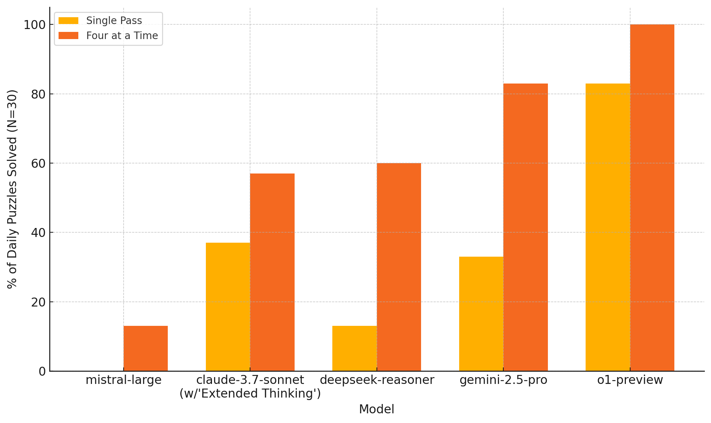
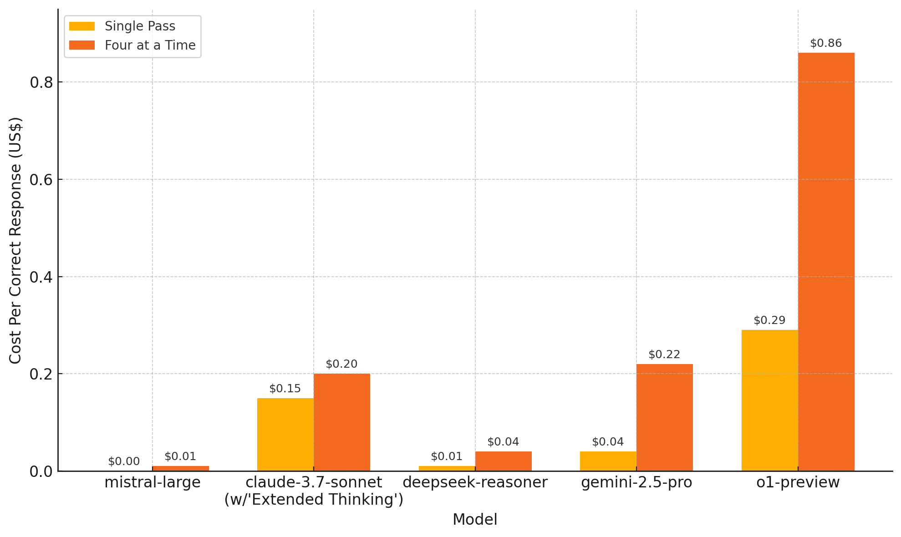
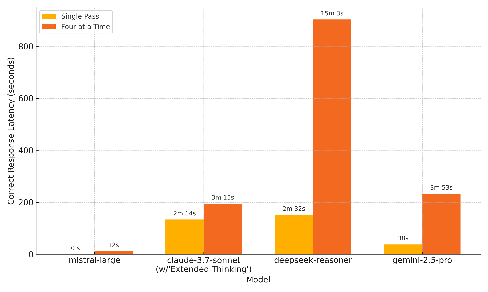

Running a Custom Benchmark: AI vs. The New York Times' Connections (Part II)
View ResultsIntroduction
Earlier this year, I built an application to programmatically evaluate how different OpenAI models perform on the New York Times word game Connections . I was mainly interested in how OpenAI’s then-newly released ‘reasoning’ model, o1, would perform on the puzzle. Although o1 has since been superseded by a better, cheaper, and faster model (o3), and is scheduled to be deprecated in the OpenAI API, it performed extremely well on Connections.
Since completing the OpenAI evaluation, I’ve been wanting to expand the experiment to include other providers, partly out of curiosity about how their models would perform on the puzzle, and partly as a way to learn more about their models and APIs.
I ended up testing the following additional providers and models: (1) Google (Gemini 2.0 Flash, 2.5 Flash, and 2.5 Pro), (2) Anthropic (Claude 3.0 Opus, 3.5 Haiku, 3.5 Sonnet, and 3.7 Sonnet), (3) DeepSeek (DeepSeek Chat and DeepSeek Reasoner), and (4) Mistral (Mistral Medium 3 and Mistral Large). Consistent with the original experiment, I tested each of the models in ‘Single Pass’ and ‘Four at a Time’ modes on each of the puzzles in the sample.
A few thoughts on the LLM landscape
Many people have noted their frustration with how AI companies are naming their models. In general, it’s impossible to tell what a model might be used for from its name. For example, Google has a model called Gemini 2.5 Pro (a ‘thinking model’) and another called Gemini 2.5 Flash—for which you can configure a ‘thinking budget’. How is Gemini 2.5 Flash with a thinking budget different from Gemini 2.5 Pro?
Even worse, model descriptions are being rendered meaningless by AI marketing superlatives. For example, here’s how Anthropic describes the four models I used in this experiment:
- Claude 3.7 Sonnet: Highest level of intelligence and capability with toggleable extended thinking
- Claude 3.5 Sonnet: High level of intelligence and capability
- Claude 3.5 Haiku: Intelligence at blazing speeds
- Claude 3.0 Opus: Powerful model for complex tasks with top-level intelligence
It's impossible to say what these descriptions mean in practice. What should you expect from a model that has mere 'intelligence' (3.5 Haiku), compared to one that has a 'high' or 'highest' level of intelligence?
A further complication comes from the fact that many providers now offer models based on a ‘chain-of-thought’ paradigm, whereby a model undertakes an extended, token-intensive reasoning process before providing its response. Generally, these models are being called ‘reasoning’ or ‘thinking’ models, but it doesn’t look like this convention holds across providers. For example, Mistral describes its latest model, Mistral Large, as capable of ‘top-tier reasoning for high-complexity tasks and sophisticated problems’, a description which led me to assume that this must be Mistral’s version of a reasoning model. Upon testing the model, however, this turned out not to be the case.
A final issue is the speed with which models are being released and then replaced with newer versions. For example, in the few months between running the initial experiment and this expanded one, OpenAI announced the replacement and deprecation of three of the models I tested initially (o1, o1-mini, and GPT-4.5)—models which were themselves introduced only 3-6 months ago.
Upshot: Things will take time to settle
The churn is somewhat understandable. Models are improving quickly, so frequent updates are inevitable. I think providers could do a better job naming and describing their models, and perhaps not having as many of them to choose from. At the same time, we as users are still figuring out the differences between the models and learning about the various training paradigms and what they translate to in practice. The more we use these models, and the more familiar we become with their range of capabilities, the less confusing the landscape will be.
Results
Given the somewhat large number of models tested, I won’t go through the results for each provider in detail. In the analysis below, I compare the performance of each provider’s flagship reasoning model, or, when this is not available, the most recent version of its strongest model. In addition to o1 from the initial experiment, these models are: Gemini 2.5 Pro, Claude 3.7 Sonnet (with ‘Extended Thinking’ enabled with a budget of 16,000 tokens), DeepSeek Reasoner, and Mistral Large.
None of the models matched o1’s performance on the puzzle. Google’s Gemini 2.5 Pro came closest, solving the puzzle 83% of the time in Four at a Time mode. It was followed by DeepSeek Reasoner and Claude 3.7 Sonnet, which solved the puzzle roughly 60% of the time in Four at a Time. Mistral Large scored only 13%, which is understandable given that the model does not incorporate a chain-of-thought process.
In terms of cost, the non-OpenAI models models were significantly cheaper than o1, with average cost per correct response ranging from $0.04 to $0.22 in Four at a Time mode, compared to $0.86 for o1. However, this comparison might be dated: o3, OpenAI’s newer reasoning model, is cheaper than o1, and may also be more efficient (hence consuming fewer tokens). Additionally, o3’s ‘mini’ version (o3-mini), which I did test in the initial experiment, performed better than Gemini 2.5 Pro (90% score in Four at a Time), and was also cheaper ($0.07 per correct response).
Finally, I measured response latency in this part of the experiment:
Although I didn’t capture latency when testing the OpenAI models, my feeling is that Gemini 2.5 Pro and Claude 3.7 Sonnet had roughly similar performance on speed as o1. I was surprised how slow DeepSeek Reasoner was, sometimes taking up to 30 minutes to go through a Four at a Time run. My understanding is that this slowness has more to do with the China-based deployment I accessed rather than something internal to the model.
Final thoughts
Obviously, Connections is an arbitrary benchmark. When I first started this experiment with the OpenAI models, I had two motivations: (1) A genuine curiosity about how o1 would perform on the puzzle over a decent sample, (2) A desire to work with the OpenAI API and implement a puzzle solving sequence, especially in Four at a Time mode—not something too complex, but not trivial either, especially if one is working with the API and structured outputs for the first time.
Having done this in the first part of the experiment, the novelty had worn off a bit by the time I began this part. I was still mildly curious how models from other providers would perform compared to o1. If performance was comparable, it would hint at greater model commoditization. Given the results, I do wonder why some reasoning models (o1 and Gemini 2.5 Pro) performed better on the puzzle than others (DeepSeek Reasoner and Claude 3.7 Sonnet). Are they just better and stronger? Are some models being trained with slightly different priorities? Whatever the case, the results suggest that ‘reasoning model’ is not, at the moment, a one-size-fits-all formula.